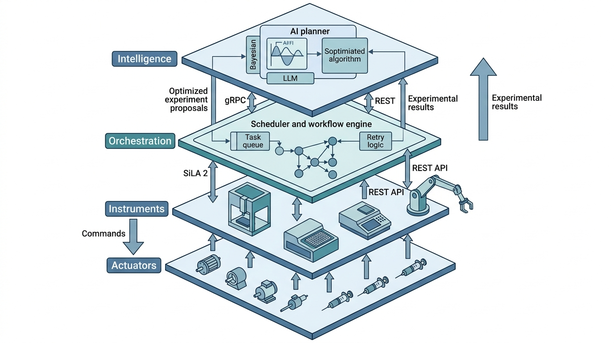
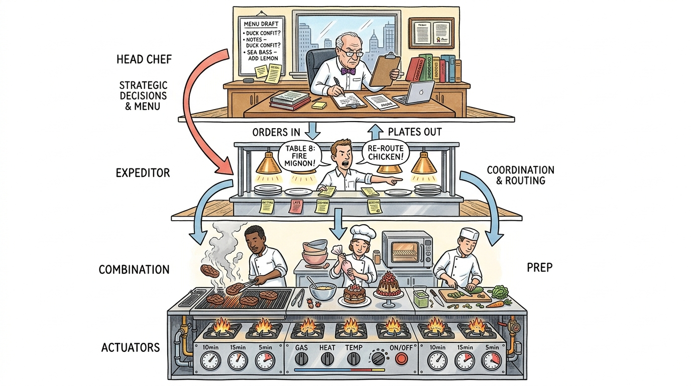

Prerequisites
This section assumes familiarity with REST APIs and JSON data formats from Chapter 12, basic chemistry concepts (solutions, concentrations, plate formats) from Chapter 49, and the system architecture principles from Chapter 6. No robotics experience is required.
A self-driving laboratory (SDL) is only as autonomous as its least automated component. If a human must manually load samples, read a value from a screen, or copy a result into a spreadsheet, the loop breaks. This section surveys the hardware and software layers that enable full automation: robotic liquid handlers that dispense nanoliter volumes, plate readers that measure absorbance and fluorescence, robotic arms that transfer plates between instruments (where a multiwell plate is a rectangular plastic tray with a grid of small wells, typically 96 or 384, each holding an independent reaction), and the software orchestration layer that coordinates them all. Understanding this infrastructure is essential before we can close the loop in Section 55.2.
1. The Laboratory Automation Stack
When a pharmaceutical team needs to screen 10,000 compounds per week, every manual step that takes a technician two minutes adds up to 333 hours of human labor, turning a one-week campaign into a months-long slog. The layered architecture below is what makes that throughput physically achievable.
When a robotic arm drops a microplate at 2 a.m. because the gripper calibration drifted by half a millimeter, no amount of brilliant AI planning can salvage the experiment. The reliability of autonomous science depends less on the intelligence at the top of the stack than on the infrastructure underneath it. Laboratory automation arranges into four layers, each abstracting the one below it, as Figure 55.1 illustrates. At the bottom, actuators (motors, pumps, syringes) move physical matter. Above them, instruments (liquid handlers, plate readers, spectrometers) combine actuators with sensors into functional units. The orchestration layer schedules instrument operations into workflows, handling timing dependencies and error recovery. At the top, the intelligence layer (our AI planner) decides what to do next based on accumulated results. Figure 55.1.1 illustrates the four-layer laboratory automation stack.

The laboratory automation stack separates physical motion from scientific decision-making through well-defined interfaces at each level. Without this separation, every change to an instrument driver would force a rewrite of the AI planner, and every new AI strategy would require re-engineering the hardware integration. Each layer exposes a standardized API to the layer above it. An instrument exposes "aspirate 10 uL" rather than "move stepper motor 400 steps," so upper layers never need to know the details below. Use this layered approach whenever you integrate more than one instrument or anticipate swapping components. For single-instrument setups with no plans to scale, a monolithic script that directly controls the hardware may be simpler.
This four-layer stack mirrors the software architecture from Chapter 6: actuators correspond to hardware drivers, instruments to service modules, orchestration to the workflow engine, and intelligence to the decision layer. The parallel is not accidental. Laboratory automation software evolved from industrial process control, inheriting its layered architecture.
The hardest part of building an SDL is not any single layer; it is the interfaces between layers. A liquid handler speaks SiLA 2 (Standardization in Laboratory Automation; introduced formally in Section 4 below), a plate reader returns CSV files, a robotic arm uses a proprietary binary protocol, and the AI planner expects a Python dictionary. Each interface translation is a potential failure point. The number of integration seams grows linearly with the number of instruments, but the number of potential failure modes grows combinatorially. Standardization efforts like SiLA 2 and the Allotrope Data Format exist precisely to reduce this combinatorial burden.
Mental Model

Think of the laboratory automation stack like a restaurant kitchen. The actuators are the individual burners, knobs, and timers on the stove. The instruments are the stations: the grill station, the pastry station, the prep station, each combining several tools into a functional unit. The orchestration layer is the expeditor (the person calling orders and timing courses so that every dish for a table arrives together, rerouting work when a station falls behind). The intelligence layer is the head chef deciding the menu and adjusting tonight's specials based on what ingredients arrived and what sold well yesterday. Just as a head chef never reaches over to adjust a burner directly (that would bypass the station cook and the expeditor, creating chaos), the AI planner never sends raw motor commands. Each layer trusts the one below it to handle its own complexity.
2. Robotic Platforms and Liquid Handling
The workhorse of high-throughput experimentation is the liquid handler: a Cartesian robot (X-Y-Z gantry with a pipetting head) that dispenses precise volumes of liquid into multiwell plates. Modern liquid handlers typically achieve volumetric precision of better than 1% at microliter volumes and better than 5% at nanoliter volumes. Key platforms include the Hamilton STAR, Beckman Coulter Biomek, and Opentrons OT-2 (Opentrons released the higher-throughput Flex platform in 2023; the OT-2 remains widely used in academic SDLs).
The Opentrons OT-2 stands out because its control software is open-source Python: each physical operation (aspirate, dispense, move to well) is a method call rather than a vendor-specific script. An AI planner can therefore generate executable instrument commands directly, making the OT-2 a natural fit for SDL integration.
Common Misconception
A common misconception is that "laboratory automation" means the AI is in full control, making all decisions and directly commanding every motor. In reality, the AI planner occupies only the top layer of the stack and issues high-level requests ("measure compound X at five concentrations"); the vast majority of the automation infrastructure consists of deterministic scheduling logic, protocol translation, error handling, and safety interlocks that operate independently of any AI, and these layers would function identically with a human scientist typing commands instead of an AI planner.
The following Python class models a simplified liquid handler, capturing the essential operations without requiring physical hardware. In short: automate the plumbing so the science can run while you sleep.
"""Simulated liquid handler with the core operations of a real platform.
Models volumetric operations on multiwell plates with realistic
constraints: dead volume, maximum aspiration, tip tracking.
"""
from dataclasses import dataclass, field
from typing import Optional
import numpy as np
@dataclass
class Well:
"""Single well in a multiwell plate."""
row: int
col: int
max_volume_ul: float = 200.0 # standard 96-well plate
current_volume_ul: float = 0.0
contents: dict = field(default_factory=dict) # solute -> concentration
@property
def address(self) -> str:
"""Human-readable well address, e.g., 'A1', 'H12'."""
return f"{chr(65 + self.row)}{self.col + 1}"
@dataclass
class Plate:
"""Multiwell plate (96-well default)."""
rows: int = 8
cols: int = 12
wells: dict = field(default_factory=dict)
def __post_init__(self):
for r in range(self.rows):
for c in range(self.cols):
self.wells[(r, c)] = Well(row=r, col=c)
def well(self, address: str) -> Well:
"""Look up well by address string, e.g., 'A1'."""
row = ord(address[0].upper()) - 65
col = int(address[1:]) - 1
return self.wells[(row, col)]
class LiquidHandler:
"""Simulated liquid handler with volumetric tracking.
Models the core operations of a Hamilton STAR or Opentrons OT-2:
aspirate, dispense, mix, and transfer. Tracks tip state and
enforces volume constraints.
"""
def __init__(self, dead_volume_ul: float = 5.0,
max_aspirate_ul: float = 200.0):
self.dead_volume_ul = dead_volume_ul
self.max_aspirate_ul = max_aspirate_ul
self.tip_volume_ul: float = 0.0
self.tip_contents: dict = {}
self.log: list[dict] = []
def aspirate(self, plate: Plate, well_address: str,
volume_ul: float) -> None:
"""Aspirate liquid from a well into the current tip."""
well = plate.well(well_address)
available = well.current_volume_ul - self.dead_volume_ul
if volume_ul > available:
raise ValueError(
f"Cannot aspirate {volume_ul} uL from {well_address}: "
f"only {available:.1f} uL available above dead volume"
)
if self.tip_volume_ul + volume_ul > self.max_aspirate_ul:
raise ValueError(
f"Aspirating {volume_ul} uL would exceed tip capacity "
f"({self.max_aspirate_ul} uL)"
)
well.current_volume_ul -= volume_ul
self.tip_volume_ul += volume_ul
self.tip_contents = dict(well.contents)
self.log.append({
"action": "aspirate", "well": well_address,
"volume_ul": volume_ul
})
def dispense(self, plate: Plate, well_address: str,
volume_ul: float) -> None:
"""Dispense liquid from the current tip into a well."""
well = plate.well(well_address)
if volume_ul > self.tip_volume_ul:
raise ValueError(
f"Cannot dispense {volume_ul} uL: tip contains "
f"only {self.tip_volume_ul:.1f} uL"
)
if well.current_volume_ul + volume_ul > well.max_volume_ul:
raise ValueError(
f"Dispensing {volume_ul} uL into {well_address} would "
f"exceed well capacity ({well.max_volume_ul} uL)"
)
well.current_volume_ul += volume_ul
self.tip_volume_ul -= volume_ul
# Simplified mixing model: update well contents
for solute, conc in self.tip_contents.items():
if solute in well.contents:
# Volume-weighted average
total_vol = well.current_volume_ul
old_vol = total_vol - volume_ul
well.contents[solute] = (
well.contents[solute] * old_vol + conc * volume_ul
) / total_vol
else:
well.contents[solute] = conc * volume_ul / well.current_volume_ul
self.log.append({
"action": "dispense", "well": well_address,
"volume_ul": volume_ul
})
def transfer(self, plate: Plate, source: str, dest: str,
volume_ul: float) -> None:
"""Transfer liquid from one well to another."""
self.aspirate(plate, source, volume_ul)
self.dispense(plate, dest, volume_ul)
# Demonstrate the liquid handler
plate = Plate()
handler = LiquidHandler()
# Prepare a stock solution in well A1
stock_well = plate.well("A1")
stock_well.current_volume_ul = 150.0
stock_well.contents = {"compound_X": 10.0} # 10 mM
# Serial dilution into A2, A3, A4
for i, dest in enumerate(["A2", "A3", "A4"], start=1):
dest_well = plate.well(dest)
dest_well.current_volume_ul = 100.0 # pre-filled with buffer
dest_well.contents = {"buffer": 1.0}
handler.transfer(plate, "A1", dest, volume_ul=20.0)
# Print resulting concentrations
for addr in ["A1", "A2", "A3", "A4"]:
w = plate.well(addr)
conc = w.contents.get("compound_X", 0.0)
print(f"Well {addr}: {w.current_volume_ul:.1f} uL, "
f"[compound_X] = {conc:.3f} mM")
transfer method composes aspirate and dispense into a single operation, matching the API of real platforms like the Opentrons OT-2.The simulation in Listing 55.1 enforces the same constraints a physical handler enforces: dead volume (liquid that cannot be aspirated from the bottom of a well), tip capacity, and well overflow. These constraints matter for SDL design because they limit the space of executable experiments. An AI planner that ignores dead volume will propose experiments that fail on the robot.
Once the liquid handler has prepared samples in the plate, the next question is immediate: what happened in those wells, and how do we measure it?
3. Measurement Instruments and Readout
After the liquid handler prepares samples, measurement instruments characterize them. The most common high-throughput measurement is plate reading: passing light through each well of a multiwell plate and measuring absorbance (how much light the sample absorbs, governed by the Beer-Lambert law, which states that absorbance is proportional to the product of the analyte concentration, the molar absorptivity of the compound, and the optical path length), fluorescence, or luminescence. A plate reader can measure all 96 (or 384, or 1536) wells in under a minute, producing a matrix of values that maps directly to the experimental design. (That is up to 1,536 independent measurements per minute from a single benchtop instrument, a throughput no human with a cuvette spectrophotometer could match in an entire day.)
Beyond plate readers, SDLs integrate more specialized instruments. X-ray diffraction (XRD) identifies crystal structures. Mass spectrometry (MS) determines molecular weights and fragmentation patterns. Nuclear magnetic resonance (NMR) resolves molecular geometry. Each instrument produces data in different formats (vendor-specific binary, CSV, JCAMP-DX), at different time scales (seconds for UV-Vis, hours for NMR), and with different reliability characteristics (plate readers tend to be relatively robust; mass spectrometers require frequent calibration).
Checkpoint
So far: plate readers convert chemical concentrations into absorbance values via Beer-Lambert law, while specialized instruments (XRD, MS, NMR) each produce data in different formats and at different time scales, and the orchestration layer must reconcile all of them.
The following class models a plate reader that returns absorbance measurements with realistic noise.
"""Simulated plate reader returning absorbance measurements.
Models Beer-Lambert law with Gaussian measurement noise,
background correction, and saturation at high optical density.
"""
import numpy as np
from dataclasses import dataclass
@dataclass
class PlateReaderConfig:
"""Configuration for a simulated plate reader."""
wavelength_nm: float = 450.0
path_length_cm: float = 0.56 # standard 96-well plate
noise_std: float = 0.005 # typical CV ~1% at OD 0.5
saturation_od: float = 3.5 # detector saturation
background_od: float = 0.045 # plate + buffer background
class SimulatedPlateReader:
"""Plate reader following Beer-Lambert with noise and saturation.
Absorbance = epsilon * c * l, where epsilon is the molar
absorptivity, c is concentration, and l is path length.
"""
def __init__(self, config: PlateReaderConfig = None):
self.config = config or PlateReaderConfig()
self.rng = np.random.default_rng(seed=42)
def read_well(self, concentration_mM: float,
extinction_coeff: float = 21000.0) -> float:
"""Read absorbance for a single well.
Args:
concentration_mM: analyte concentration in millimolar
extinction_coeff: molar absorptivity in L/(mol*cm)
Returns:
Measured optical density (absorbance units)
"""
# Beer-Lambert: A = epsilon * c * l
# Convert mM to M for standard units
concentration_M = concentration_mM / 1000.0
true_od = (extinction_coeff * concentration_M
* self.config.path_length_cm)
# Add background and noise
measured_od = (true_od + self.config.background_od
+ self.rng.normal(0, self.config.noise_std))
# Apply saturation (detector cannot read above this value)
measured_od = min(measured_od, self.config.saturation_od)
return max(measured_od, 0.0) # OD cannot be negative
def read_plate(self, concentration_matrix: np.ndarray,
extinction_coeff: float = 21000.0) -> np.ndarray:
"""Read all wells of a plate.
Args:
concentration_matrix: (rows, cols) array of concentrations
extinction_coeff: molar absorptivity
Returns:
(rows, cols) array of measured absorbance values
"""
readings = np.zeros_like(concentration_matrix)
for i in range(concentration_matrix.shape[0]):
for j in range(concentration_matrix.shape[1]):
readings[i, j] = self.read_well(
concentration_matrix[i, j], extinction_coeff
)
return readings
# Demonstrate: read a dilution series
reader = SimulatedPlateReader()
concentrations = np.array([10.0, 5.0, 2.5, 1.25, 0.625, 0.3125])
readings = np.array([reader.read_well(c) for c in concentrations])
print("Concentration (mM) | Absorbance (OD)")
print("-" * 38)
for c, od in zip(concentrations, readings):
print(f" {c:>8.4f} | {od:.4f}")
read_plate method processes an entire multiwell plate, returning a concentration-to-absorbance matrix for a six-point dilution series.Simulating an individual instrument is straightforward, but a real SDL must coordinate many instruments that speak entirely different languages; the challenge shifts from what each device does to how they talk to one another.
4. Instrument Control Protocols
Real laboratory instruments communicate over several standardized protocols. The most important for SDL integration are:
SiLA 2 (Standardization in Laboratory Automation, version 2) defines a gRPC-based (gRPC is a high-performance remote procedure call framework that uses binary serialization for efficient communication between services) protocol for instrument control. Each instrument exposes "features" (capabilities like "Aspirate," "Dispense," "ReadAbsorbance") as gRPC services with defined request and response schemas. SiLA 2's strength is composability: because every instrument speaks the same protocol, the orchestration layer can address any instrument through the same client code.
OPC UA (Open Platform Communications Unified Architecture) is the industrial automation standard for process instruments. It provides a hierarchical information model where instruments publish variables (temperature, pressure, flow rate) that clients can read, write, and subscribe to. OPC UA is more common in chemical engineering and process chemistry than in life sciences.
REST/HTTP is increasingly used by modern platforms, particularly cloud-connected instruments. The Opentrons HTTP API, Emerald Cloud Lab's API, and many LIMS (Laboratory Information Management Systems) expose REST endpoints. REST has lower integration complexity than gRPC for simple request-response patterns and is easier to integrate with web-based AI planners.
All three protocols (SiLA 2, OPC UA, REST) solve the same problem: giving the orchestration layer a uniform way to address heterogeneous instruments. The choice depends on your instrument fleet and latency requirements.
The instrument interface takes the form of a Python abstract class that every adapter must implement.
"""Abstract instrument interface for SDL integration.
Every instrument in the SDL must implement this interface,
providing a uniform API for the orchestration layer.
"""
from abc import ABC, abstractmethod
from dataclasses import dataclass
from enum import Enum
from typing import Any
import json
import time
class InstrumentStatus(Enum):
IDLE = "idle"
BUSY = "busy"
ERROR = "error"
MAINTENANCE = "maintenance"
@dataclass
class InstrumentCommand:
"""A command to be sent to an instrument."""
instrument_id: str
action: str
parameters: dict
timestamp: float = 0.0
def __post_init__(self):
if self.timestamp == 0.0:
self.timestamp = time.time()
def to_json(self) -> str:
return json.dumps({
"instrument_id": self.instrument_id,
"action": self.action,
"parameters": self.parameters,
"timestamp": self.timestamp
})
@dataclass
class InstrumentResult:
"""Result returned by an instrument after executing a command."""
instrument_id: str
command_action: str
success: bool
data: dict
error_message: str = ""
execution_time_s: float = 0.0
class InstrumentAdapter(ABC):
"""Abstract base class for instrument integration.
Every physical or simulated instrument in the SDL implements
this interface. The orchestration layer interacts with instruments
exclusively through these methods.
"""
@abstractmethod
def get_status(self) -> InstrumentStatus:
"""Query the current instrument status."""
...
@abstractmethod
def execute(self, command: InstrumentCommand) -> InstrumentResult:
"""Execute a command and return the result."""
...
@abstractmethod
def validate_command(self, command: InstrumentCommand) -> bool:
"""Check whether a command is valid before execution."""
...
@property
@abstractmethod
def capabilities(self) -> list[str]:
"""List the actions this instrument supports."""
...
class SimulatedPlateReaderAdapter(InstrumentAdapter):
"""Adapter wrapping our simulated plate reader."""
def __init__(self):
self.reader = SimulatedPlateReader()
self._status = InstrumentStatus.IDLE
def get_status(self) -> InstrumentStatus:
return self._status
def execute(self, command: InstrumentCommand) -> InstrumentResult:
self._status = InstrumentStatus.BUSY
start = time.time()
try:
if command.action == "read_well":
od = self.reader.read_well(
concentration_mM=command.parameters["concentration_mM"],
extinction_coeff=command.parameters.get(
"extinction_coeff", 21000.0
)
)
result = InstrumentResult(
instrument_id=command.instrument_id,
command_action=command.action,
success=True,
data={"absorbance_od": od},
execution_time_s=time.time() - start
)
else:
result = InstrumentResult(
instrument_id=command.instrument_id,
command_action=command.action,
success=False,
data={},
error_message=f"Unknown action: {command.action}"
)
finally:
self._status = InstrumentStatus.IDLE
return result
def validate_command(self, command: InstrumentCommand) -> bool:
if command.action == "read_well":
return "concentration_mM" in command.parameters
return False
@property
def capabilities(self) -> list[str]:
return ["read_well"]
# Demonstrate the adapter pattern
adapter = SimulatedPlateReaderAdapter()
cmd = InstrumentCommand(
instrument_id="plate_reader_01",
action="read_well",
parameters={"concentration_mM": 5.0}
)
print(f"Status: {adapter.get_status().value}")
print(f"Valid command: {adapter.validate_command(cmd)}")
result = adapter.execute(cmd)
print(f"Absorbance: {result.data['absorbance_od']:.4f} OD")
print(f"Execution time: {result.execution_time_s*1000:.1f} ms")
InstrumentAdapter base class defining the uniform interface (status query, command execution, validation, capability listing) that every SDL instrument must implement. The SimulatedPlateReaderAdapter demonstrates the pattern by wrapping the plate reader from Listing 55.2.
The sila2 Python package provides auto-generated client and server stubs from
SiLA 2 Feature Definition Language (FDL) files. Instead of writing the adapter
pattern from scratch, you define your instrument's capabilities in an XML-based FDL
file, run the code generator, and get a gRPC client and server with type-checked
request/response objects. This reduces the adapter code from ~80 lines to ~15 lines
of glue code connecting the generated server to your instrument driver. The trade-off
is that SiLA 2 requires a gRPC runtime and its FDL schema adds complexity for
instruments with simple interfaces.
5. Scheduling and Orchestration
With uniform instrument adapters in place, the remaining bottleneck is coordination: deciding which instrument runs which operation, in what order, and what to do when something goes wrong.
A realistic SDL runs multiple instruments concurrently. While the plate reader measures batch \(n\), the liquid handler prepares batch \(n+1\), and the AI planner computes acquisition scores (numerical rankings of how informative each candidate experiment would be, as introduced in Section 5.2) for batch \(n+2\). This concurrency requires a scheduler that manages instrument availability, handles timing dependencies, and recovers from failures.
Scheduling maps to the job-shop problem from operations research. Each experiment is a "job" consisting of ordered "operations" (prepare, incubate, measure), and each instrument is a "machine" that processes one operation at a time. The scheduler aims to maximize throughput (experiments per hour) while respecting timing constraints (incubation times, measurement windows) and resource limits (available tips, plate positions).
"""Simple priority-queue scheduler for SDL instrument orchestration.
Manages a queue of experiment tasks, dispatches them to available
instruments, and handles completion callbacks.
"""
import heapq
from dataclasses import dataclass, field
from typing import Callable
from enum import Enum
class TaskState(Enum):
PENDING = "pending"
RUNNING = "running"
COMPLETED = "completed"
FAILED = "failed"
@dataclass(order=True)
class ExperimentTask:
"""A single task in the SDL workflow."""
priority: int
task_id: str = field(compare=False)
instrument_id: str = field(compare=False)
command: InstrumentCommand = field(compare=False)
state: TaskState = field(default=TaskState.PENDING, compare=False)
depends_on: list[str] = field(default_factory=list, compare=False)
result: InstrumentResult = field(default=None, compare=False)
class SDLScheduler:
"""Priority-queue scheduler for SDL experiments.
Dispatches tasks to instruments when their dependencies are
satisfied and instruments are available.
"""
def __init__(self):
self.queue: list[ExperimentTask] = []
self.instruments: dict[str, InstrumentAdapter] = {}
self.completed: dict[str, ExperimentTask] = {}
self.task_registry: dict[str, ExperimentTask] = {}
def register_instrument(self, instrument_id: str,
adapter: InstrumentAdapter) -> None:
"""Register an instrument with the scheduler."""
self.instruments[instrument_id] = adapter
def submit(self, task: ExperimentTask) -> None:
"""Submit a task to the scheduling queue."""
heapq.heappush(self.queue, task)
self.task_registry[task.task_id] = task
def _dependencies_met(self, task: ExperimentTask) -> bool:
"""Check if all dependencies for a task are completed."""
return all(
dep_id in self.completed
for dep_id in task.depends_on
)
def _instrument_available(self, instrument_id: str) -> bool:
"""Check if an instrument is idle and ready."""
if instrument_id not in self.instruments:
return False
return (self.instruments[instrument_id].get_status()
== InstrumentStatus.IDLE)
def step(self) -> list[ExperimentTask]:
"""Execute one scheduling step: dispatch ready tasks.
Returns list of tasks that completed in this step.
"""
completed_this_step = []
remaining = []
while self.queue:
task = heapq.heappop(self.queue)
if (self._dependencies_met(task)
and self._instrument_available(task.instrument_id)):
# Dispatch the task
task.state = TaskState.RUNNING
adapter = self.instruments[task.instrument_id]
result = adapter.execute(task.command)
task.result = result
task.state = (TaskState.COMPLETED if result.success
else TaskState.FAILED)
self.completed[task.task_id] = task
completed_this_step.append(task)
else:
remaining.append(task)
# Re-queue tasks that could not run
for task in remaining:
heapq.heappush(self.queue, task)
return completed_this_step
def run_all(self, max_steps: int = 100) -> dict[str, ExperimentTask]:
"""Run the scheduler until the queue is empty or max steps."""
for _ in range(max_steps):
if not self.queue:
break
self.step()
return self.completed
# Demonstrate: schedule three measurements with dependencies
scheduler = SDLScheduler()
scheduler.register_instrument(
"plate_reader_01", SimulatedPlateReaderAdapter()
)
# Three experiments: measure at 1, 5, and 10 mM
for i, conc in enumerate([1.0, 5.0, 10.0]):
task = ExperimentTask(
priority=i,
task_id=f"measure_{i}",
instrument_id="plate_reader_01",
command=InstrumentCommand(
instrument_id="plate_reader_01",
action="read_well",
parameters={"concentration_mM": conc}
)
)
scheduler.submit(task)
results = scheduler.run_all()
for task_id, task in sorted(results.items()):
od = task.result.data.get("absorbance_od", "N/A")
print(f"{task_id}: OD = {od:.4f} ({task.state.value})")
SDLScheduler dispatching ExperimentTask objects to instruments when dependencies are satisfied and instruments are idle. The step method pops tasks by priority, checks dependency and availability gates, and records results. Production SDLs use constraint programming (e.g., OR-Tools), but this pattern captures the core dispatch loop.Emerald Cloud Lab (ECL) operates a fully remote laboratory where researchers design experiments in a web interface and robotic systems execute them in a facility in South San Francisco. ECL's software stack exposes a symbolic protocol language (SLL) where each experiment is a structured expression specifying instruments, parameters, and data flows. The system compiles SLL expressions into instrument-level commands, schedules them across a fleet of robots, and returns results through a data API. Researchers at Princeton, Stanford, and Carnegie Mellon have published results using ECL without ever entering the physical lab. This model, where the "laboratory" is a cloud service with an API, represents the most mature commercial SDL architecture available today.
6. The Software Stack in Practice
One infrastructure concern that cuts across all layers is safety interlocks: checks that prevent physically dangerous or scientifically invalid operations regardless of what the upper layers request. At the actuator level, interlocks prevent a robotic arm from moving beyond its range of motion or a pump from exceeding its pressure limit. At the instrument level, they reject commands that would overflow a well or aspirate from an empty one (as our LiquidHandler does with its volume checks). At the orchestration level, they enforce timing constraints such as minimum incubation periods and prevent scheduling two instruments to access the same plate simultaneously. These deterministic guards are essential because the intelligence layer, whether a Bayesian optimizer or an LLM, can propose experiments that are logically coherent but physically unsafe.
Putting the pieces together, a production SDL software stack typically includes:
- Instrument drivers: vendor SDKs or SiLA 2 adapters that translate between the orchestration layer and physical hardware.
- A workflow engine: Prefect, Airflow, or a custom DAG (directed acyclic graph, where each node is a task and edges enforce execution order) executor that manages experiment pipelines with retry logic and logging.
- A data layer: a database (PostgreSQL, MongoDB) storing experiment definitions, instrument readings, and provenance metadata. This connects to the experiment registry from Chapter 47.
- An API gateway: a FastAPI or Flask server that exposes the SDL's capabilities to the AI planner. We build this in Section 55.3.
- The AI planner: a Bayesian optimization loop (BoTorch, Ax) or an LLM-based planner (as in Coscientist) that consumes results and proposes new experiments.
The Acceleration Consortium at the University of Toronto maintains an open-source reference implementation of this stack called Atlas, which provides pluggable modules for each layer. We use a simplified version of this architecture for the SDL recipe in Section 55.4.
prefect reduces the scheduler code in Listing 55.4 from ~70 lines to ~20 lines.
Define each instrument operation as a @task, compose them into a @flow, and
Prefect handles dependency resolution, retry logic, distributed execution, and
result caching. The key advantage over a custom scheduler is observability: Prefect's
dashboard shows real-time task status, execution times, and failure traces, which is
critical for debugging SDL workflows that run overnight.
As of 2025, Prefect 3 is the current major release, offering a redesigned task runner and native async support; Prefect 1.x is end-of-life.
Research Frontier
In 2023, Boiko et al. introduced Coscientist (Nature, 2023), a system in which GPT-4 acts as the intelligence layer of an SDL, autonomously planning chemical syntheses, writing Opentrons liquid-handler code, querying documentation and web resources, and interpreting experimental results to decide next steps. Coscientist successfully planned and executed palladium-catalyzed cross-coupling reactions (Suzuki and Sonogashira couplings) with no human intervention beyond the initial prompt. This work demonstrates that LLMs can serve as the top layer of the automation stack described in this section, replacing hand-coded Bayesian optimization loops with natural-language reasoning over instrument capabilities. The key open challenge is reliability: Coscientist's generated protocols occasionally contained errors that required safety interlocks at the orchestration layer to catch, underscoring that the deterministic lower layers of the stack remain essential even when an LLM occupies the intelligence layer.
Try It: Build and Run a Simulated SDL Pipeline
Build a complete simulated SDL loop on your laptop using only Python and NumPy.
(1) Copy the Well, Plate, and LiquidHandler classes from Listing 55.1 and the SimulatedPlateReader from Listing 55.2 into a single file called mini_sdl.py.
(2) Write a function prepare_dilution_series(plate, handler, stock_well, n_dilutions, dilution_factor) that creates an n-point serial dilution from a stock well, returning the list of destination well addresses.
(3) Write a function measure_series(reader, plate, well_addresses) that reads the absorbance of each well and returns a dictionary mapping well address to measured OD.
(4) Combine the two functions into a run_experiment(concentration_mM, n_points=6) pipeline that prepares a stock at the given concentration, dilutes it, measures the series, and prints a table of concentration vs. absorbance.
(5) Call run_experiment at three different stock concentrations (e.g., 1.0, 5.0, 10.0 mM), collect all results, and plot absorbance vs. concentration using matplotlib to verify the expected linear relationship from Beer-Lambert law. Bonus: add a line of best fit with numpy.polyfit and print the estimated extinction coefficient.
Exercise 55.1.1
A stock solution in well A1 contains 200 uL at 8.0 mM. Your liquid handler has a dead volume of 5 uL and a maximum aspirate volume of 50 uL. You want to prepare a 1:4 dilution series across wells B1 through B6 (each pre-filled with 90 uL of buffer). For each transfer you aspirate from A1 and dispense 30 uL into the destination well. After all six transfers, how much aspiratable liquid remains in A1, and what is the final concentration in well B3? Show your arithmetic for both values.
Hint
Available volume in A1 = current volume minus dead volume. Each transfer removes 30 uL from A1. The concentration in each destination well uses the volume-weighted average: (volume_dispensed * stock_concentration) / (volume_buffer + volume_dispensed). Note that these are parallel dilutions from the same stock, not serial dilutions where each well feeds the next.
Step-Through: Priority-Queue Scheduling with Dependencies
Trace the scheduler from Listing 55.4 with three tasks and a dependency chain. Suppose we submit:
Task A (priority 0, instrument: liquid_handler, depends_on: [])
Task B (priority 1, instrument: plate_reader, depends_on: [])
Task C (priority 2, instrument: plate_reader, depends_on: ["task_B"])
Step 1 (scheduler.step()): The heap pops Task A (priority 0). Dependencies: none (met). liquid_handler status: IDLE (available). Dispatch Task A; it completes. Heap pops Task B (priority 1). Dependencies: none (met). plate_reader: IDLE. Dispatch Task B; it completes. Heap pops Task C (priority 2). Dependencies: ["task_B"], and task_B is now in self.completed (met). plate_reader: IDLE again (Task B finished synchronously). Dispatch Task C; it completes. Queue is now empty.
Result after one call to step(): completed = {task_A, task_B, task_C}. All three ran in a single step because execution is synchronous in this simulation, so each instrument returns to IDLE immediately. In a real async scheduler, Task C would wait in the queue until a later step confirmed Task B had finished.
Real-World Application: Strateos Remote Execution Platform
Strateos (formerly Transcriptic) operated a robotic cloud laboratory in Menlo Park, California, where pharmaceutical companies submitted experiments through a REST API and received results without shipping samples or touching hardware. Their platform uses exactly the layered architecture described in this section: instrument adapters for Hamilton liquid handlers and BMG plate readers, a workflow engine for protocol execution with retry logic, and a scheduling layer that manages dozens of instruments across multiple workcells. Recursion Pharmaceuticals, which acquired Strateos in 2022, used the platform to screen thousands of drug candidates for fibrotic diseases, running assays around the clock with no on-site scientists.
The Robot That Ran for 688 Days Straight
In 2009, a team at Aberystwyth University built "Adam," widely recognized as the first robot scientist. Adam autonomously formed hypotheses about yeast gene function, designed microplate experiments to test them, executed the experiments using a liquid handler and plate reader, and revised its hypotheses based on the results. It ran continuously for nearly two years, completing over a thousand experiments and producing a peer-reviewed discovery (identifying genes encoding orphan enzymes, meaning enzymes whose encoding genes had not yet been identified, in Saccharomyces cerevisiae) before any human reviewed its intermediate data. The key enabling factor was not sophisticated AI (Adam used a logic-based planner, not machine learning) but reliable laboratory automation infrastructure that did not require human intervention to keep operating.
Lab: Simulate a Multi-Instrument SDL Pipeline with Opentrons API Conventions
Goal: Build and run a simulated SDL pipeline that coordinates a liquid handler and a plate reader, tracking volumes and concentrations end to end.
Tools needed: Python 3.9+, NumPy, matplotlib (for plotting).
Procedure (15 to 30 minutes):
Combine the LiquidHandler and SimulatedPlateReader classes from Listings 55.1 and 55.2 into a single script. Write a function that (1) prepares a two-fold serial dilution series across 8 wells starting from a 10 mM stock, (2) reads the absorbance of every well, and (3) plots absorbance vs. concentration.
What to vary: Change the dead volume (try 2 uL, 5 uL, 10 uL) and the noise standard deviation (try 0.001, 0.01, 0.05). Observe how dead volume limits the number of feasible dilution steps and how noise degrades the linearity of your Beer-Lambert calibration curve.
What to observe: At what noise level does a linear fit to your calibration data yield an R-squared below 0.99? At what dead volume does the sixth dilution step fail because the source well is depleted? Record these thresholds; they are the practical limits that an AI planner must respect when designing experiments on real hardware.